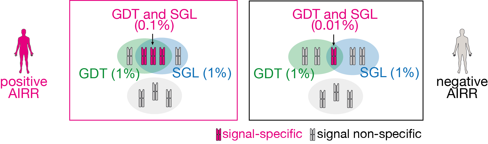
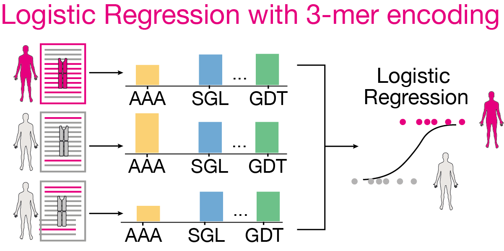
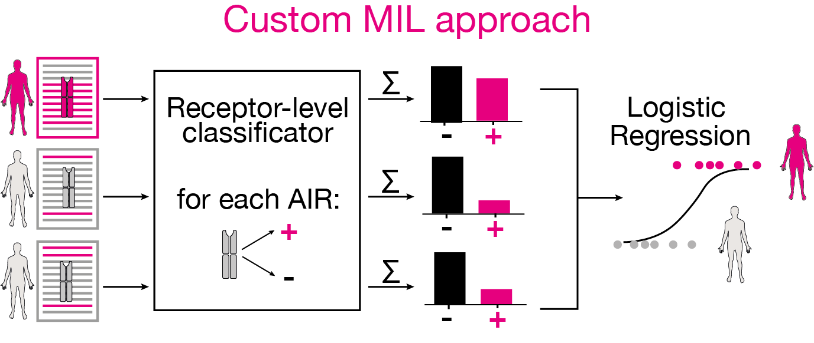

Manuscript use case 2: Limitations of conventional encoding schemes for repertoire-level binary classification when immune signals co-occur within the same AIR¶
Previous studies indicate k-mer encoding captures information necessary for classifying immune repertoires. However, since immune signals can include multiple motifs within a receptor, isolated k-mer treatment might in some cases be inadequate for representing different immune states. Using LIgO, we simulated datasets with such complex co-occurring immune signals. Machine Learning (ML) on these datasets highlighted the limitations of ML methods that overlooked motif co-occurrence. Particularly, the traditional k-mer encoding failed to distinguish between different immune states.
In this use case, we demonstrate how LIgO can be used to encode complex immune signals and how such simulations can aid the development of suited ML models in classifying immune repertoires. The configuration specification for LIgO is shown below. More detailed use case 2 description can be found in the LIgO manuscript.
Although we generated many datasets for gauging the uncertainty in the performance of ML models, we show the configuration only for one dataset for demonstration purposes. The comments in the configuration provide a detailed explanation of the parameters when needed.
Simulation configuration¶
In the configuration below, the motif1 (GDT) occurs at 1% frequency on average in the repertoires of both positive (AIRR1) and negative (AIRR2) classes. Similarly motif2 (SGL) also occurs at 1% frequency on average in the repertoires of both positive (AIRR1) and negative (AIRR2) classes. However, the positive class repertoires have a higher co-occurrence rate of motif1 and motif2 (signal1__signal2) compared to the negative class repertoires. The positive class repertoires have a co-occurrence rate of 0.1%, while the negative class repertoires have a co-occurrence rate of 0.01%.
{kind=link}
definitions:
motifs:
motif1:
seed: GDT # motif-1
motif2:
seed: SGL # motif-2
signals:
signal1:
motifs:
- motif1
signal2:
motifs:
- motif2
simulations:
sim1:
is_repertoire: true # indicating that we are simulating repertoires
paired: false # indicating that we are not simulating paired repertoires
sequence_type: amino_acid
simulation_strategy: RejectionSampling # we are using rejection sampling to obtain sequences that contain motifs
sim_items:
AIRR1: # positive class of repertoires generated using the following generative model
generative_model:
chain: beta
default_model_name: humanTRB
model_path: null
type: OLGA
is_noise: false
number_of_examples: 100 # number of repertoires to be generated
receptors_in_repertoire_count: 100000 # number of receptors in each repertoire
signals:
signal1__signal2: 0.001 # signal1 and signal2 co-occur in the same receptor at this witness rate
signal1: 0.009 # signal1 occurs in isolation in the repertoires at this witness rate
signal2: 0.009 # signal2 occurs in isolation in the repertoires at this witness rate
AIRR2: # negative class of repertoires generated using the following generative model
generative_model:
chain: beta
default_model_name: humanTRB
model_path: null
type: OLGA
is_noise: true # indicating that these repertoires receive signal at some lower witness rate and thus are not representative of the positive class
number_of_examples: 100 # number of repertoires to be generated
receptors_in_repertoire_count: 100000 # number of receptors in each repertoire
signals:
signal1__signal2: 0.0001 # signal1 and signal2 co-occur in the same receptor at this witness rate
signal1: 0.0099 # signal1 occurs in isolation in the repertoires at this witness rate
signal2: 0.0099 # signal2 occurs in isolation in the repertoires at this witness rate
instructions:
inst1:
export_p_gens: false # could take some time to compute (from olga)
max_iterations: 10000 # maximum number of iterations for the rejection sampling, where in each iteration `sequence_batch_size` sequences are generated and searched for signal sequences
number_of_processes: 32 # number of processes to be used for parallelization
sequence_batch_size: 100000 # number of sequences to be generated in each iteration
simulation: sim1
store_signal_in_receptors: true
type: LigoSim
output:
format: HTML
ML configuration¶
The L1-penalized logistic regression model on k-mer encoded data is trained used ImmuneML. The configuration for the ML model is shown below (as an example for one dataset). The parameters specification of ImmuneML are extensively documented in the ImmuneML documentation.
{kind=link}
definitions:
datasets:
cooccurring_motifs_dataset:
format: AIRR
params:
path: path_to/exported_dataset/airr/repertoires
metadata_file: path_to/exported_dataset/airr/repertoires/metadata.csv
encodings:
feature_size_3:
KmerFrequency:
k: 3
scale_to_unit_variance: True
scale_to_zero_mean: True
ml_methods:
logistic_regression:
LogisticRegression:
penalty: l1
C: [0.1,0.05,0.01,0.001]
max_iter: 500
model_selection_cv: True
model_selection_n_folds: 5
reports:
my_hp_benchmark: MLSettingsPerformance
my_coef_report:
Coefficients:
coefs_to_plot:
- n_largest
n_largest: [15]
my_motif_report:
MotifSeedRecovery:
implanted_motifs_per_label:
signal_cancer:
seeds: [GDT, SGL]
hamming_distance: False
gap_sizes: [0]
instructions:
hpoptim_instr:
assessment:
reports:
models: [my_coef_report, my_motif_report]
split_count: 5
split_strategy: k_fold
training_percentage: 0.7
number_of_processes: 32
dataset: cooccurring_motifs_dataset
labels:
- sim_item
metrics:
- auc
- recall
optimization_metric: balanced_accuracy
reports: [my_hp_benchmark]
selection:
split_count: 1
split_strategy: random
training_percentage: 1.0
settings:
- encoding: feature_size_3
ml_method: logistic_regression
strategy: GridSearch
type: TrainMLModel
refit_optimal_model: False
The custom multiple instance learning (MIL) model implemented here as a command-line tool is trained with the following configuration:
{kind=link}
concatenated_receptors_file: path_to/exported_dataset/airr/concatenated_flat_receptor_file.tsv
label_field: "epitope"
k: 3
num_processes: 50
group_field: "repertoire_id"
n_splits: 5
pval_threshold: 0.001
output_path: path/to/output/